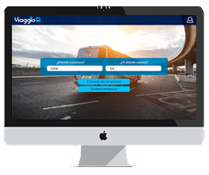

Mis Proyectos

Event Name

Event Name
Event Name
La curiosidad y las ganas de mejorar el mundo en el que vivo es algo que me ha perseguido desde muy pequeña. Actualmente tengo 23 años y estoy totalmente convencida de que haberme especializado como UX Designer es una de las mejores decisiones que he podido tomar, ya que en ella puedo explotar todas aquellas habilidades que desarrollado a lo largo de estos años, tales como la capacidad de observación y el análisis, la empatía y el auto-aprendizaje.
Tengo una afinidad muy grande por la música, formé parte de una orquesta sinfónica y es ahí en donde descrubí por primera vez lo importante que es trabajar en equipo. También, formé parte la compañía de bomberos de mi distrito, ya que siempre he considerado que ayudar a los demás no solo tiene un impacto positivo en la persona a la que ayudas, sino también en uno mismo y en la sociedad. Actualmente en mis tiempos libres ayudo a estudiantes de colegio a reforzar materias que son algo dificiles de comprender.
Me apasiona la investigación, también la creación de prototipos y la iteración. En un futuro anhelo convertirme en UX Research.